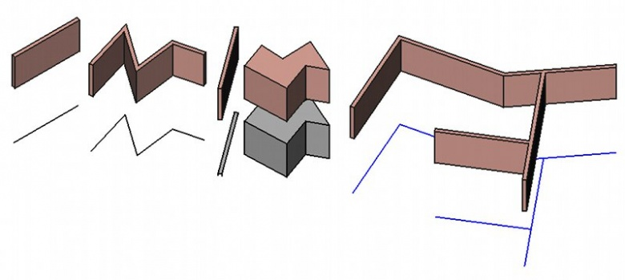

|
| Расположение в меню |
|---|
| Архитектура → Стена |
| Верстаки |
| Arch |
| Быстрые клавиши |
| W A |
| См. также |
| Структура |
Description
This tool builds a Wall object from scratch or on top of any other shape-based or mesh-based object. A wall can be built without any base object, in which case it behaves as a cubic volume, using length, width and height properties. When built on top of an existing shape, a wall can be based on:
- A linear 2D object, such as lines, wires, arcs or sketches, in which case you can change thickness, alignment(right, left or centered) and height. The length property has no effect.
- A flat face, in which case you can only change the height. Length and width properties have no effect. If the base face is vertical, however, the wall will use the width property instead of height, allowing you to build walls from space-like objects or mass studies.
- A solid, in which case length, width and height properties have no effect. The wall simply uses the underlying solid as its shape.
- A mesh, in which case the underlying mesh must be a closed, manifold solid.
 Example of walls built from a line, a wire, a face, a solid and a sketch
{kind=link}
Walls can also have additions or subtractions. Additions are other objects whose shapes are joined in this Wall's shape, while subtractions are subtracted. Additions and subtractions can be added with the Arch Add and Arch Remove tools. Additions and subtractions have no influence over wall parameters such as height and width, which can still be changed. Walls can also have their height automatic, if they are included into a higher-level object such as floors. The height must be kept at 0, then the wall will adopt the height specified in the parent object.
When several walls should intersect, you need to place them into a floor to have their geometry intersected.
How to use
Drawing a wall from scratch
- Press the
 Arch Wall button, or press W then A keys
Arch Wall button, or press W then A keys - Click a first point on the 3D view, or type a coordinate
- Click a second point on the 3D view, or type a coordinate
Drawing a wall on top of a selected object
- Select one or more base geometry objects (Draft object, sketch, etc)
- Press the Arch Wall button, or press the W then A keys
- Adjust needed properties such as height or width.
Options
- Walls share the common properties and behaviours of all Arch Components
- The height, width and alignment of a wall can be set during drawing, via the task panel
- When snapping a wall to an existing wall, both walls will be joined into one. The way the two walls are joined depends on their properties: If they have the same width, height and alignment, and if the option "join base sketches" is enabled in the Arch preferences, the resulting wall will be one object based on a sketch made of several segments. Otherwise, the latter wall will be added to the first one as addition.
- Press X, Y or Z after the first point to constrain the second point on the given axis.
- To enter coordinates manually, simply enter the numbers, then press ENTER between each X, Y and Z component.
- Press R or click the checkbox to check/uncheck the Relative button. If relative mode is on, the coordinates of the second point are relative to the first one. If not, they are absolute, taken from the (0,0,0) origin point.
- Press SHIFT while drawing to constrain your second point horizontally or vertically in relation to the first one.
- Press ESC or the Cancel button to abort the current command.
- Double-clicking on the wall in the tree view after it is created allows you to enter edit mode and access and modify its additions and subtractions
- Multi-layer walls can be easily created by building several walls from the same baseline. By setting their Align property to either left or right, and specifying an Offset value, you can effectively construct several wall layers. Placing a window in such a wall layer will propagate the opening to the other wall layers based on the same baseline.
- Walls can also make use of Multi-Materials. When using a multi-material, the wall will become multi-layer, using the thicknesses specified by the multi-material. Any layer with a thickness of zero will have its thickness defined automatically by the remaining space defined by the Wall's Width value, after subtracting the other layers.
- Walls can be made to display blocks, instead of one single solid, by turning their Make Blocks property on. The size and offset of blocks can be configured with different properties, and the amount of blocks is automatically calculated. available in version 0.18
Snapping
Snapping works a bit differently with Arch walls than other Arch and Draft objects. If a wall has a baseline object, snapping will anchor to the base object, instead of the wall geometry, allowing to easily align walls by their baseline. If, however, you specifically want to snap to the wall geometry, pressing CTRL will switch snapping to the wall object.
{kind=link}
Properties
Wall objects inherit the properties of Part objects, and also have the following extra properties:
- DATAAlign: The alignment of the wall on its baseline: Left, right or center
- DATABase: The base object this wall is built on
- DATAFace: The index of the face from the base object to use. If the vaue is not set or 0, the whole object is used
- DATAForce Wire: If True, and the wall is based on a face, only the border wire of the face is used, resulting in a wall bordering the face
- DATALength: The length of the wall (not used when the wall is based on an object)
- DATAWidth: The width of the wall (not used when the wall is based on a face)
- DATAHeight: The height of the wall (not used when the wall is based on a solid). If no height is given, and the wall is inside a floor object with its height defined, the wall will automatically take the value of the floor height.
- DATANormal: An extrusion direction for the wall. If set to (0,0,0), the extrusion direction is automatic.
- DATAOffset: This specifies the distance between the wall and its baseline. Works only if the Align property is set to Right or Left.
- DATAMake Blocks: Enable this to make the wall generate blocks
- DATABlock Length: The length of each block
- DATABlock Height: The height of each block
- DATAOffset First: The horizontal offset of the first line of blocks
- DATAOffset Second: The horizontal offset of the second line of blocks
- DATAJoint: The size of the joints between each block
- DATACount Entire: The number of entire blocks (read-only)
- DATACount Broken: The number of broken blocks (read-only)
Scripting
The Wall tool can by used in macros and from the python console by using the following function:
makeWall ( [obj],[length],[width],[height],[align],[face],[name] )
- Creates a wall based on the given object, which can be a sketch, a draft object, a face or a solid. align can be "Center","Left" or "Right". If you provide no base object, then you can use numeric values for length, width and height. Face can be used to give the index of a face from the underlying object, to build this wall on, instead of using the whole object.
- Returns the created wall, or None if the operation failed.
Example:
import FreeCAD, Draft, Arch baseline = Draft.makeLine(FreeCAD.Vector(0,0,0),FreeCAD.Vector(2,0,0)) Arch.makeWall(baseline,None,0.1,2)